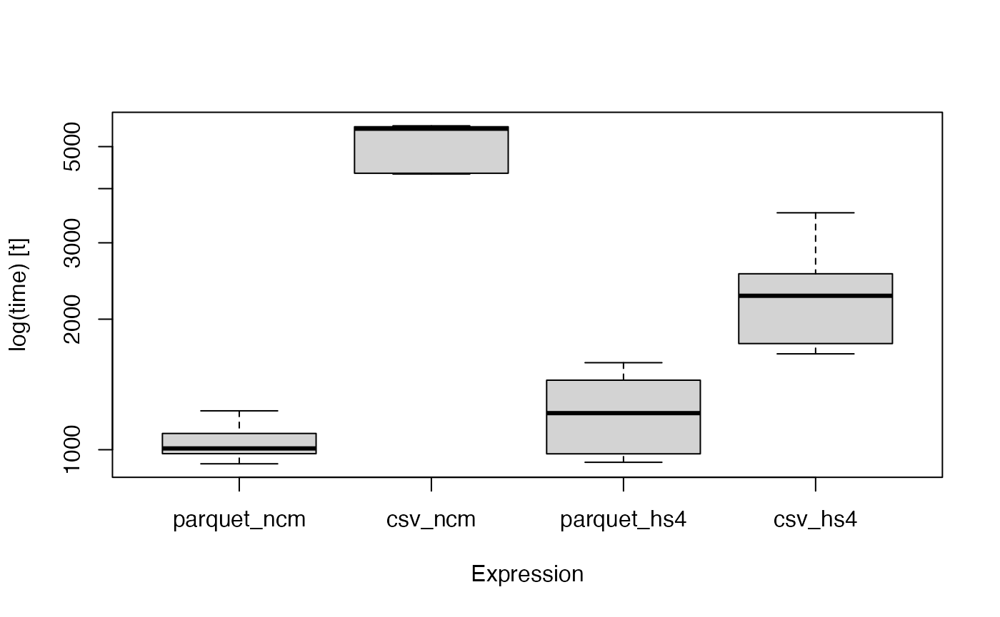

library(microbenchmark)
library(dplyr)
#>
#> Attaching package: 'dplyr'
#> The following objects are masked from 'package:stats':
#>
#> filter, lag
#> The following objects are masked from 'package:base':
#>
#> intersect, setdiff, setequal, union
library(comexr)
res <- microbenchmark(parquet_ncm=comexr:::comex_ncm()%>%
filter(year%in%2010:2013)%>%
group_by(direction, year)%>%
comexr::comex_sum(x = "fob_usd")%>%
collect()%>%
ungroup,
csv_ncm=comexr:::comex_ncm_raw()%>%
filter(year%in%2010:2013)%>%
group_by(direction, year)%>%
comexr::comex_sum(x = "fob_usd")%>%
collect()%>%
ungroup ,
parquet_hs4=comexr:::comex_hs4()%>%
group_by(direction, year, country_code)%>%
comexr::comex_sum(x = "fob_usd")%>%
collect()%>%
ungroup,
csv_hs4=comexr:::comex_hs4_raw()%>%
group_by(direction, year, country_code)%>%
comexr::comex_sum(x = "fob_usd")%>%
collect()%>%
ungroup,
times=5L)
#> Warning in microbenchmark(parquet_ncm = comexr:::comex_ncm() %>% filter(year
#> %in% : less accurate nanosecond times to avoid potential integer overflows
print(res)
#> Unit: milliseconds
#> expr min lq mean median uq max neval
#> parquet_ncm 928.0544 979.2967 1046.803 1006.925 1090.294 1229.446 5
#> csv_ncm 4323.3543 4340.6278 5060.364 5498.437 5555.786 5583.615 5
#> parquet_hs4 935.4655 978.4894 1232.510 1214.477 1446.634 1587.482 5
#> csv_hs4 1663.8368 1757.0924 2349.821 2264.527 2545.252 3518.395 5
boxplot(res)